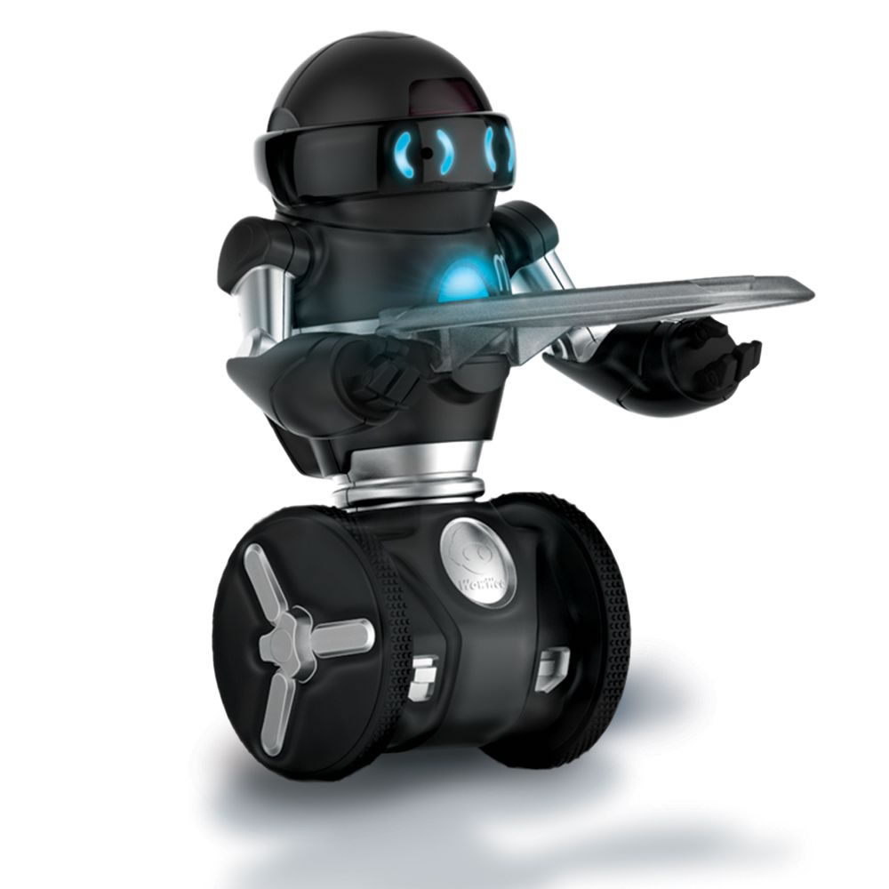
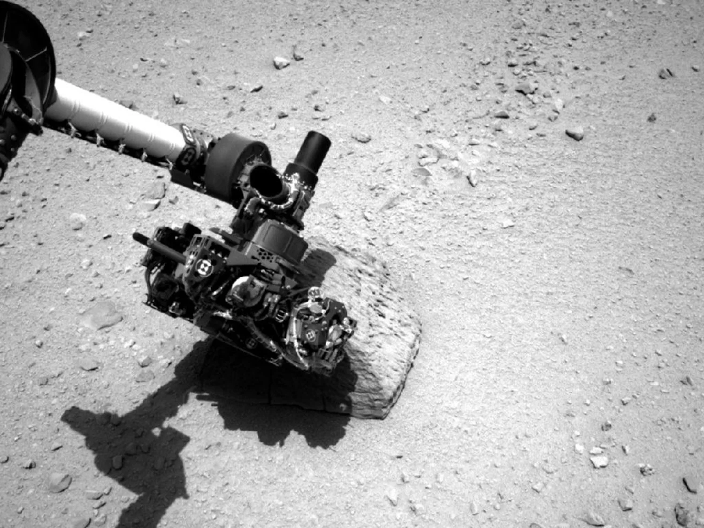

Project 1: Autonomous Navigation of Mars Rover - This project involves developing a robot capable of delivering items autonomously using GPS and obstacle detection technology.

Hi, I am Ananya Pandey Y23 from mechanical department , the secretary of the Robotics Club. I'm thrilled to share our club's activities and efforts with you. Our group is dedicated to investigating and developing creative robotics projects, and we have a terrific line-up this summer.
Project 1: Autonomous Navigation of Mars Rover - This project involves developing a robot capable of delivering items autonomously using GPS and obstacle detection technology.
Project 2: GyroBot - A 2-Wheeled self-balancing robot that achieves perfect equilibrium using technology and precision engineering. The robot has locomotion capabilities while maintaining its balance similar to humans.
Project 3: Robotic Arm - A versatile robotic arm designed for precision tasks, programmed to perform various functions such as picking and placing objects. Use of inverse kinematics for arm movements.
Project 4: Space Station: Controls and Communication - To develop and validate the communication and control system for remotely operating the Rover over extensive distances with precise movement and efficient data transfer.